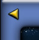

|  | ||
Help Index / Basic Rules /BattlesA battle occurs in UltraCorps whenever Combat or Auto Fleets arrive at a world owned by another player, or at a neutral world (one owned by Nobody). Each turn's battles are all resolved at the same time, during the tick. Battle RoundsA battle is played out in rounds. Each round in a battle involves five steps:
Rounds continue until only one player has combat units remaining. The winner gets the world and all surviving non-combat units (Ultranium, population, scanners, upgrades, etc.). Newly acquired worlds will be flagged next turn with asterisks * in your Player News report. It is possible that all combat units will be destroyed in the same round of battle. In this case, the defender keeps control of the world. The results may be seen, round by round, in the Battle Reports. These reports will remain visible for the whole game, linked from the bottom of the World Information Page. Anyone who looks at a world can see, round by round, every battle that ever took place there. Multiplayer BattlesPlayers can make diplomatic agreements to avoid each others' worlds or send gift fleets . . . but on the tactical level, all players are enemies. Any number of players can be involved in a battle. When two or more players arrive at a Nobody world, they will fight each other as well as Nobody. When two or more players arrive at another player's world, they will all fight each other until only one remains. Combat works the same as in a normal battle. Every unit picks its target randomly from all enemy units at the world. The last Commander standing is the winner . . . or if all units are destroyed in the same round, the defender keeps the world. This can lead to some tactically interesting results. If one player has a lot of "fodder" units, for instance, that will tend to protect the capital units of all players there, until the fodder is used up. Subtopics: FirepowerX-Factors |
||